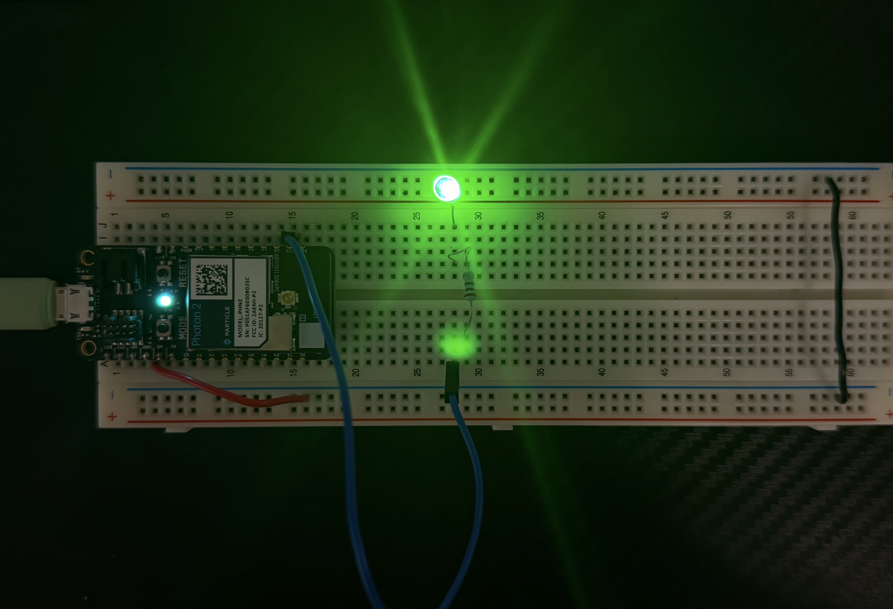
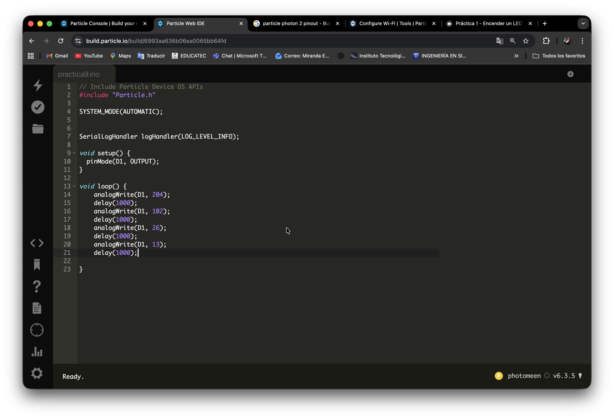

Práctica 9 - Control de brillo de un LED mediante señal PWM
Nivel: Fácil
Duración: 15 minutos
Objetivo
Para variar progresivamente la intensidad luminosa de un LED utilizando la función analogWrite(). NOTA: asegurate de que el pin elegido tenga soporte para PWM
Material
- 1 × Particle Photon 2
- 1 x Proto Board
- 1 × LED (cualquier color)
- 1 × Resistencia 220Ω
- Cables jumper
- Conexión a Internet
Conexión
LED → Pin D1
| Componente | Pin Photon2 |
|---|---|
| LED (ánodo) | D1 |
| LED (cátodo) | GND |
| Resistencia | Entre LED y D1 |
Ver Simulación
🔬 Simulación Interactiva – PWM en LED (D1)

Brillo: 204 → 102 → 26 → 13 (se repite cada segundo)
Código
include "Particle.h"
SYSTEM_MODE(AUTOMATIC);
SerialLogHandler logHandler(LOG_LEVEL_INFO);
void setup() {
pinMode(D1, OUTPUT);
}
void loop() {
analogWrite(D1, 204);
delay(1000);
analogWrite(D1, 102);
delay(1000);
analogWrite(D1, 26);
delay(1000);
analogWrite(D1, 13);
delay(1000);
}
Procedimiento
- Colocar el Particle Photon 2 a un extremo del protoboard
- Colocar el LED en cualquiera de las lineas de conexión que estén libres
- Conectar el catodo del led a la linea de tierra del protoboard. NOTA: puede ser directo o con un jumper
- Colocar una resistencia de 220Ω frente al otro extremo del LED (ánodos) NOTA: no importa la direccion de la resistencia, asegurate de que la resistencia este en la lina que tiene continuidad con el LED
- Conectar el extremo de la resistencia que quedo libre un cable JUMPER para llevarlo a el PIN elegido (D1)
- Conectar con un cable de tipo MICRO-USB el Particle Photon 2 a tu PC
- Conectar el Particle Photon 2 a Internet, puedes usar este enlace: (https://docs.particle.io/tools/developer-tools/configure-wi-fi/)
Resultado Esperado
Se espera que el LED aumente su intensidad de manera gradual hasta alcanzar el máximo brillo y posteriormente disminuya progresivamente hasta apagarse por completo.
Evidencia

